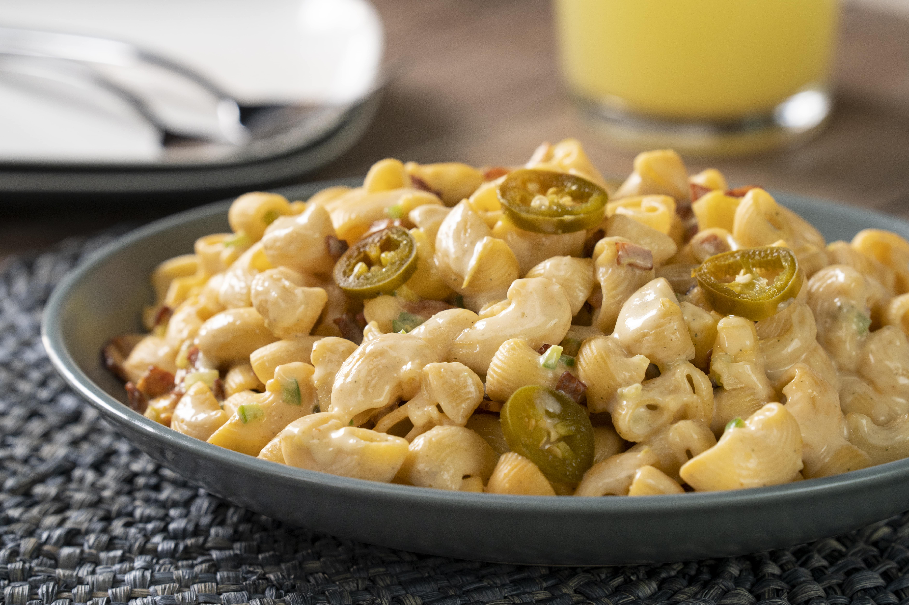

Receta Pasta Fría con Jalapeño

Estas es la deliciosa pasta!
Esta pasta fría con jalapeño es la combinación ganadora para las comidas con amigos y familia.
Ingredientes:
- suficiente de agua
- 3 cucharadas de mantequilla
- 1 cucharada de concentrado de pollo
- 2 sobres de pasta de coditos
- 1 taza de aderezo de mayonesa con chile jalapeño
- 1 taza de tocino, frito
- 1 taza de crema ácida
- 1 cucharadita de ajo en polvo
- 1 cucharadita de sal de apio, en polvo
- 1 1/2 tazas de piña, en cubitos
- 2 chiles jalapeños, finamente picado y sin semillas
- 1/2 tazas de apio, en cubitos
- 1 taza de queso para nachos
- al gusto de jalapeño, en rodajas
Pasos:
- Agrega la mantequilla y el concentrado de pollo en una cacerola con agua hirviendo
- Permite que regrese el hervor y agrega la pasta
- Cocina de 8 a 10 minutos
- Escurre, deja enfriar y reserva
- Agrega la pasta, el aderezo de mayonesa con chile jalapeño, el tocino, la crema ácida, el ajo en polvo, la sal de apio, la piña, el chile jalapeño, el apio y el queso cheddar en un bowl
- Mezcla hasta integrar
- Reserva
- Sirve la pasta fría con jalapeño en un platón